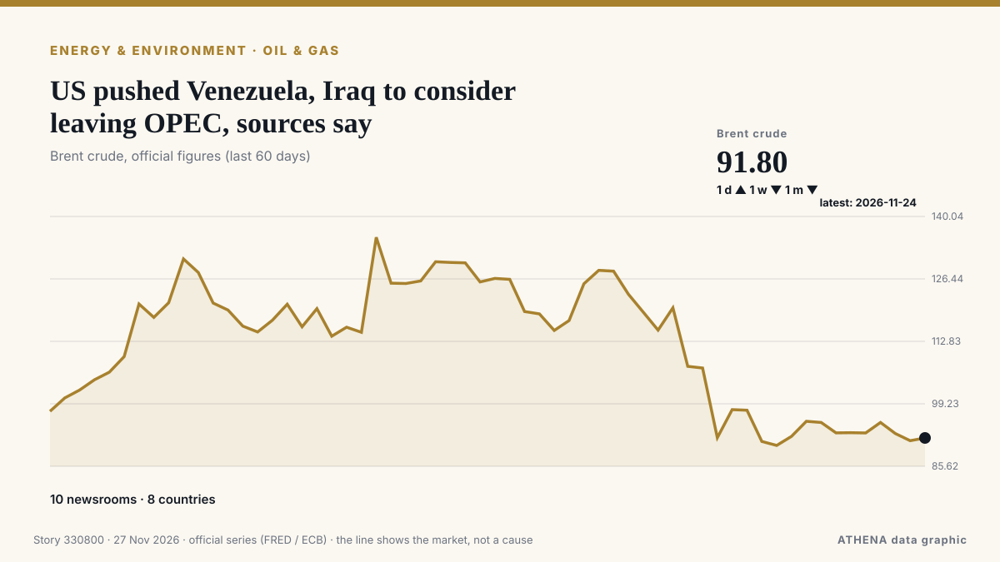

Pétrole et gaz
SponsoriséPrésenté par  Cybernetics and Artificial Intelligence Lab Welcome to the Cybernetics and Artificial Intelligence Laboratory, established at the Department of Business Administration of the National and Kapodistrian University of Athens. The lab is headed by Professor Dimitrios Thomakos. The lab aims to do research that can be published in top venues. Our research uses tools and methods of Artificial Intelligence, and lies in the following areas: - Forecasting - Decision making - Cyber security - Finance We are always looking forward to collaborating with exceptional students!
Cybernetics and Artificial Intelligence Lab Welcome to the Cybernetics and Artificial Intelligence Laboratory, established at the Department of Business Administration of the National and Kapodistrian University of Athens. The lab is headed by Professor Dimitrios Thomakos. The lab aims to do research that can be published in top venues. Our research uses tools and methods of Artificial Intelligence, and lies in the following areas: - Forecasting - Decision making - Cyber security - Finance We are always looking forward to collaborating with exceptional students!
| 15 nov. | 0 |
|---|---|
| 16 nov. | 0 |
| 17 nov. | 0 |
| 18 nov. | 0 |
| 19 nov. | 1 |
| 20 nov. | 1 |
| 21 nov. | 0 |
| 22 nov. | 1 |
| 23 nov. | 0 |
| 24 nov. | 8 |
| 25 nov. | 7 |
| 26 nov. | 5 |
| 27 nov. | 1 |
| 28 nov. | 0 |
Les titres sont affichés en anglais, tels que publiés.

US pushed Venezuela, Iraq to consider leaving OPEC, sources say
The US also prevented Venezuela from paying its annual membership dues to the group. de The Straits Times
Iraq's oil revenues hit $8.8bn as it prepares to ask for higher Opec quota
Iraq's oil revenue from crude exports rose to $8.8 billion in October, the oil ministry said, as the country prepares to ask Opec to increase its quota at a meeting on Sunday. de The National
Bangchak halts Thai refinery as 7 hurt in fire
The cause of the incident is under investigation. de The Business Times
Labor braces for as few as 10 seats in Victorian bloodbath
Premier Ben Carroll and at least 40 of his colleagues are staring down the barrel of defeat in their electorates as the ALP faces a repudiation of its 12 years in office. de Australian Financial Review
Oil slips over 1% as supply glut prospect offsets Middle East disruption fears
Brent crude futures drop $1.35, or 1.5%, to $90.05 a barrel. de Express Tribune
Trafigura appoints Helio Cumbi as Executive Director, Mozambique
Trafigura has appointed Helio Cumbi as Executive Director, Mozambique, and Business Development Lead for East and Southern Africa Oil. de Club of Mozambique
Iraq PM sacks senior officials over oil smuggling scandal
Iraq's prime minister has sacked senior officials over an oil smuggling investigation and ordered tighter federal control over Kurdistan's oil exports. de The New Arab
Samsung and DNV team up on nuclear-powered LNG carrier
Samsung Heavy Industries, Tesser Atomics, NTNU and DNV to develop nuclear-powered LNG carrier concept for transatlantic trade. de Seatrade Maritime
Afreximbank, Ibom LNG partner to raise $1.5bn for gas project
Nigeria's Ibom LNG & Logistics Base has signed a financial advisory agreement with the African Export-Import Bank (Afreximbank) to support the mobilization of $1.5 billion for its proposed liquefied… de LNG Prime
Equinor, JAPEX agree NCS asset swap, trading Goliat stake for more of Verdande
Equinor will trade an 8% stake in Goliat and interests in two Norwegian Sea exploration licenses to JAPEX in exchange for JAPEX's 3.5% stake in Verdande and $65 million in cash. de World Oil
Army plan to detonate lead azide in Iowa 'insane': Attorney
An attorney representing victims of the Sept. de The Hill
Libya's NOC plans 2027 bid round for undeveloped fields, exploration round in 2028
Libya's NOC will launch a bid round for discovered, undeveloped and marginal fields in 2027 and an exploration round in early 2028. de World Oil
Saipem wins $650 million in Aramco offshore contracts across five Saudi fields
Saipem has won two Aramco offshore contracts worth about $650 million, covering seven production deck manifolds, about 39 km of pipeline and 41 km of power cable across the Marjan, Safaniya, Manifa… de World Oil
Iraq presses OPEC+ to raise oil output
Baghdad (IraqiNews.com) – Iraq is pushing OPEC+ to raise its estimated crude oil production capacity ahead of the group’s scheduled meeting on November 29 to set 2027 output quotas. de Iraqi News
QatarEnergy, JBIC ink LNG pact
State-owned LNG giant QatarEnergy has entered into a memorandum of understanding with the Japan Bank for International Cooperation (JBIC) to cooperate across the energy value chain, including LNG and… de LNG Prime
US data centre boom through 2028 will lift power and gas demand: Goldman Sachs
The rapid expansion could further tighten US power markets and increase natural gas demand. de The Business Times
China, India set for record Russian oil imports in 2026
China and India are on track for record Russian oil imports this year, plugging a supply gap caused by the Iran war, as US sanctions waivers eased purchases and Ukrainian drone attacks knocked out… de Business Recorder
TotalEnergies strengthens its partnership with Continental Resources to develop its gas production
TotalEnergies has signed a new agreement with Continental Resources, under which TotalEnergies acquires interests in natural gas upstream assets. de Cyprus Shipping News
Putin Calls for More Oil Refining in Siberia, Russia’s Far East
Russian President Vladimir Putin on Tuesday told a meeting of his fuel and energy commission that Russia must develop oil refining in Siberia and the Far East. de Kyiv Post